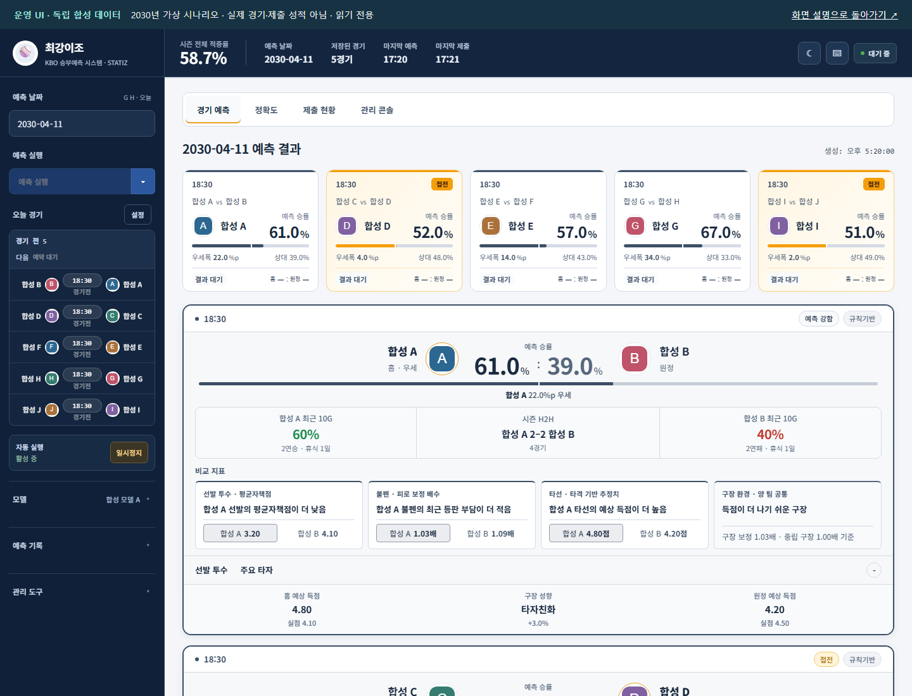
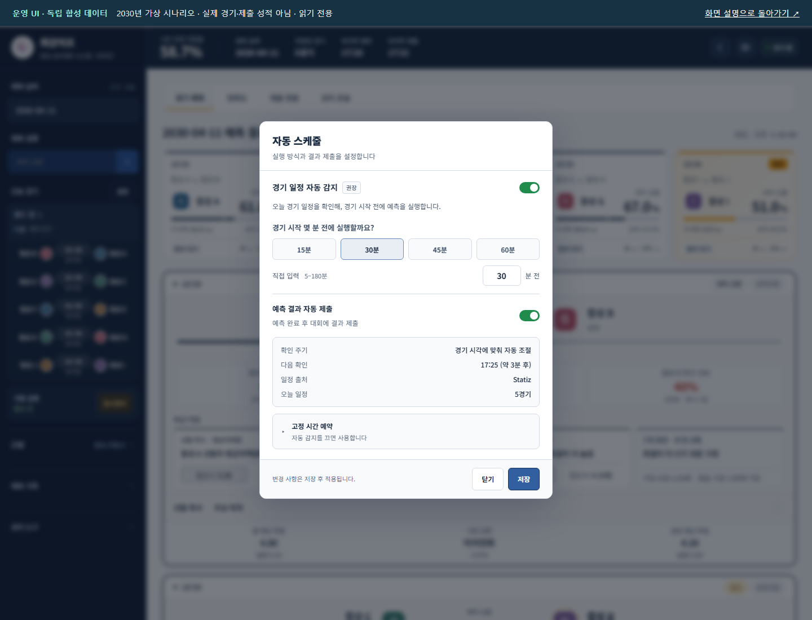
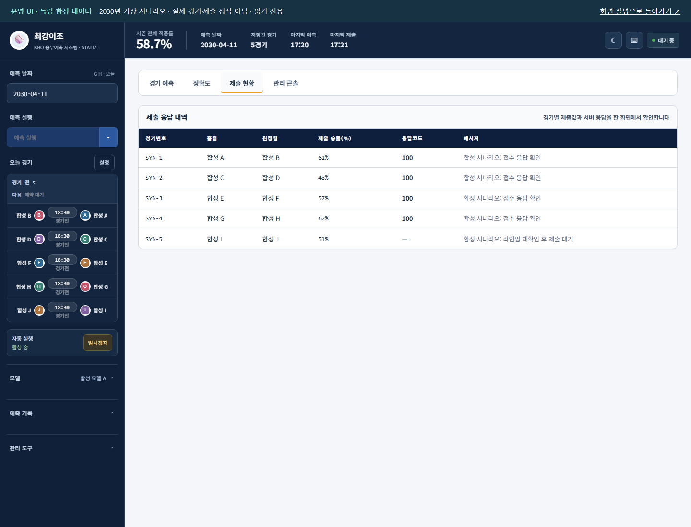
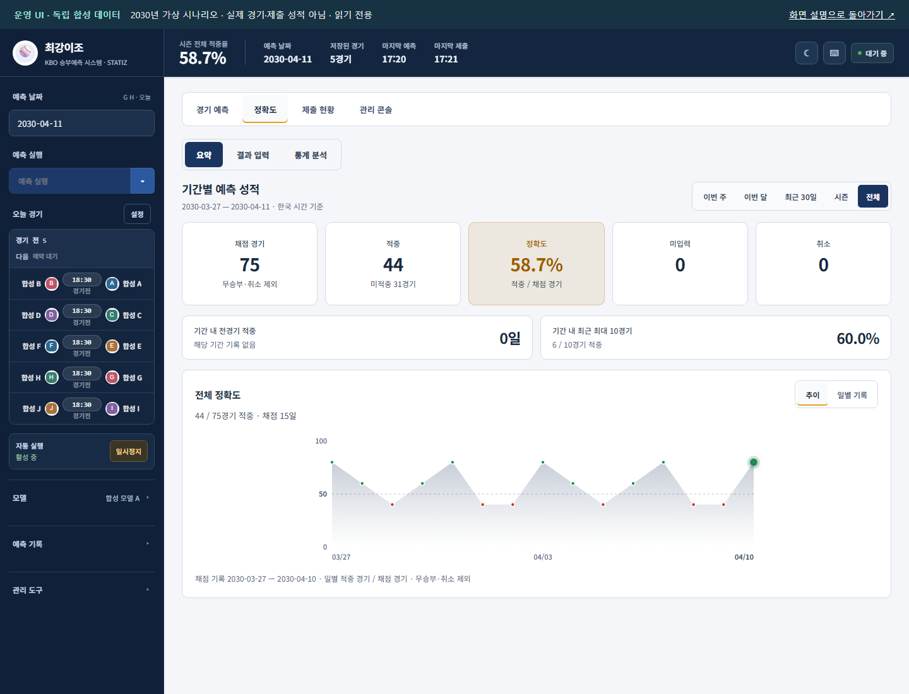
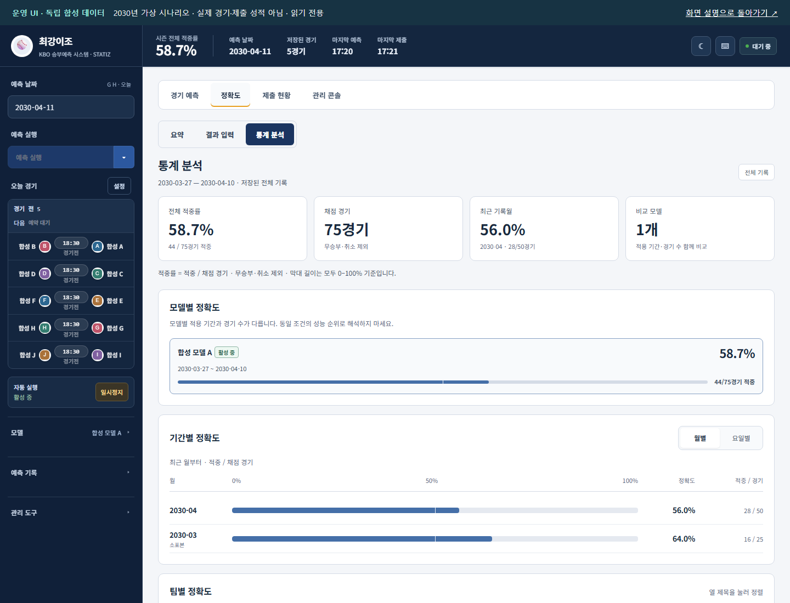
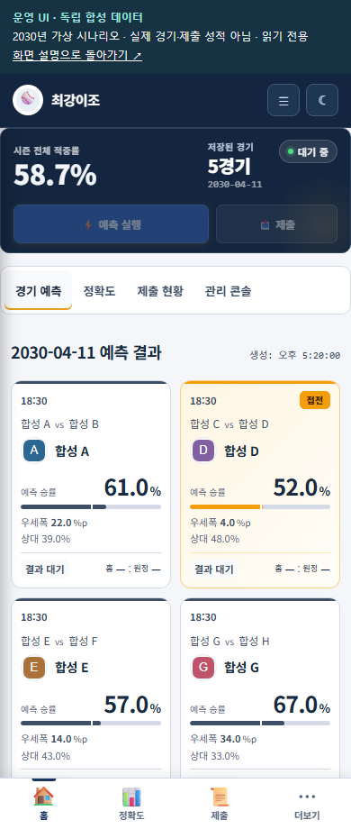

확률과 입력 상태
우세 팀뿐 아니라 접전, 선발·라인업 확정 여부와 비교 지표를 확인합니다.
KBO 승리 확률을 만드는 과정과 매일의 실행·제출·평가를 연결한 4인 팀 프로젝트입니다. 원격 서버에서 사용한 대시보드의 화면 구성과 운영 판단을 이 기록에서 확인할 수 있습니다.
우세 팀뿐 아니라 접전, 선발·라인업 확정 여부와 비교 지표를 확인합니다.
예측 파일이 생긴 것과 대회 서버가 제출을 접수한 것을 구분합니다.
기간별 분모를 표시하고, 공식 참가 성적과 내부 모델 비교의 목적을 분리합니다.
승리 확률과 접전 여부를 먼저 보고, 선발·불펜·타선·구장 비교 지표를 함께 확인합니다.
모델의 확률과 화면의 보조 지표를 구별합니다. 비교 지표는 인과적 승패 원인이라는 뜻이 아닙니다.
정적 화면 열기 ↗
경기 일정 자동 감지, 경기 시작 전 실행 시각, 자동 제출 여부를 한 곳에서 설정합니다.
마감 전 실행과 접수 확인은 서로 다른 단계입니다. 수동 제출 누락 경험에서 운영 자동화로 이어진 문제를 설명합니다.
정적 화면 열기 ↗
경기별 제출 확률·응답 코드·메시지로 접수 확인과 대기 상태를 구분합니다.
그림의 4건 접수·1건 대기는 가상 시나리오입니다. 실제 접수율이나 가동률 측정값이 아닙니다.
정적 화면 열기 ↗
채점 경기·적중·미입력·취소를 분리하고, 선택 기간의 날짜별 적중 흐름을 확인합니다.
가상 기록 75경기 중 44경기 적중입니다. 주최 측 참가 기록 54.6%와 무관합니다.
정적 화면 열기 ↗
모델 적용 기간·표본 수, 팀별 홈·원정 성적과 월별 집계를 확인합니다.
서로 다른 기간의 모델 성적은 동일 경기 비교가 아니므로 우열을 바로 판정하지 않습니다.
정적 화면 열기 ↗
좁은 화면에서는 요약 카드와 하단 메뉴로 경기·성적·제출을 확인합니다.
390 × 920 화면의 반응형 표시 기록입니다. 실제 휴대폰의 모든 환경을 검증했다는 뜻은 아닙니다.
정적 화면 열기 ↗
실제 운영의 화면 구조, 표시 항목과 판단 흐름을 보존한 기록입니다. 정적 화면의 조작 버튼은 비활성화되어 있습니다. 현재 상태 조회·제출·모델 추론은 실행하지 않습니다.
주최 측 공개 팀 페이지는 2026-10-13 조회 시점에 16위·시즌 적중률 54.6%·게임 참여수 689경기·ALL KILL 5회를 표시했습니다. 참여수와 적중률의 분모는 별도로 읽으며, 최종 수상 결과를 의미하지 않습니다. 주최 측 팀 기록
팀 프로젝트 전체를 단독 개발 성과로 제시하지 않습니다. 개인 역할과 확인한 기여 범위는 README, 수동 제출과 원격 자동 운영의 시점 구분은 시즌 회고에서 설명합니다.
실제 데이터·학습 모델·제출 원장·운영 주소·원본 실행 코드는 이 기록에 포함하지 않습니다. 시스템 글꼴과 가상 팀 문자 로고를 사용하고, 외부 장식용 아이콘 의존성을 제거했습니다. 작성 근거와 화면 안내 · 자료 이용 조건